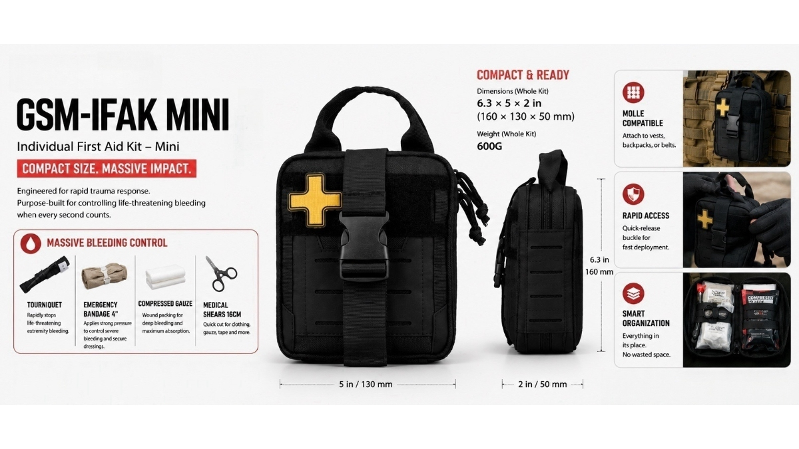

Why One Distributor Asked Why Our IFAK Costs More — And Why It Was the Right Question
JUL 10, 2026

A few days ago, we received a question from a medical distributor after sending a quotation for one of our Individual First Aid Kits (IFAKs).
The question was simple: “Why is your IFAK more expensive than many others on the market?”
To be honest, we like this question.
Because it tells us the customer isn't simply looking for the lowest quotation—they're trying to understand what they're actually buying.
That conversation inspired this article.
Two Products Can Both Be Called an “IFAK”
If you've been sourcing trauma kits for any length of time, you've probably noticed something interesting.
Many products are labelled IFAK (Individual First Aid Kit).
The pouch often looks similar.
The colour may be similar.
Sometimes even the number of items looks comparable.
Yet the quotations can vary dramatically.
At first glance, it can be difficult to understand why.
The answer usually isn't the bag.
It's the trauma capability inside the bag.

The First Item We Look At Isn't the Pouch. It's the Tourniquet.
When we compare IFAK configurations, the first component we look for is the tourniquet.
Not because it's one of the more expensive items.
Because it defines what the kit is expected to do.
A properly configured tourniquet allows responders to rapidly control catastrophic limb bleeding before significant blood loss occurs.
For customers supplying:
- industrial emergency response teams
- mining operations
- security companies
- tactical users
- remote worksites
this isn't simply another accessory.
It's one of the primary reasons they're purchasing an IFAK in the first place.
If an “IFAK” doesn't include a tourniquet, it may still be a useful first aid kit—but it serves a very different purpose.
An Emergency Bandage Isn't Just Another Bandage
Another component we always discuss with distributors is the Emergency Bandage.
Some buyers initially see it as an ordinary dressing.
In reality, it's designed to do much more.
It combines pressure application and wound securing into a single device, allowing responders to maintain compression on a severe wound while preparing for evacuation.
For workplaces where professional medical care may be several minutes—or even hours—away, this can make a significant difference.
Again, this isn't about adding another item to increase the contents list.
It's about providing a different level of trauma response.
Compressed Gauze Is Included for a Reason
We also noticed that many lower-cost IFAKs replace Compressed Gauze with additional general wound care items.
Compressed Gauze isn't included simply to make the kit look more complete.
Its purpose is wound packing—a technique commonly used to manage deep bleeding before evacuation.
That capability is very different from cleaning a wound or applying a standard dressing.
Both types of products have their place.
They simply address different levels of injury.
The Conversation Changed Once We Compared Functions Instead of Prices
Rather than continuing to discuss the quotation itself, we prepared a simple comparison showing two typical IFAK configurations.
Instead of asking,
“Which one is cheaper?”
the discussion became:
“Which one better matches the needs of our customers?”
That's a much more valuable conversation.
Because for distributors, selecting the wrong configuration can create problems later:
- products that don't match customer expectations
- confusion during tender evaluations
- unnecessary price comparisons between products designed for different applications
What B2B Buyers Should Compare Before Comparing Prices
When evaluating an Individual First Aid Kit supplier, we encourage buyers to compare more than the quotation.
Ask questions like:
- Who will actually use this kit?
- Is the application industrial, tactical, workplace, or outdoor?
- Does the configuration prioritise catastrophic bleeding control?
- Are you comparing two products designed for the same level of trauma response?
These questions usually provide far more value than comparing the total number of items inside the pouch.
Our Approach
At GoSafeMed, we rarely begin a discussion by recommending the most expensive kit.
Instead, we start by understanding the customer's application.
Sometimes a basic trauma configuration is exactly what's needed.
Sometimes a customer requires a more comprehensive IFAK designed around rapid hemorrhage control.
Our goal isn't simply to supply first aid kits.
It's to help distributors choose a configuration that genuinely matches their market—and avoid comparing products that only look similar on paper.